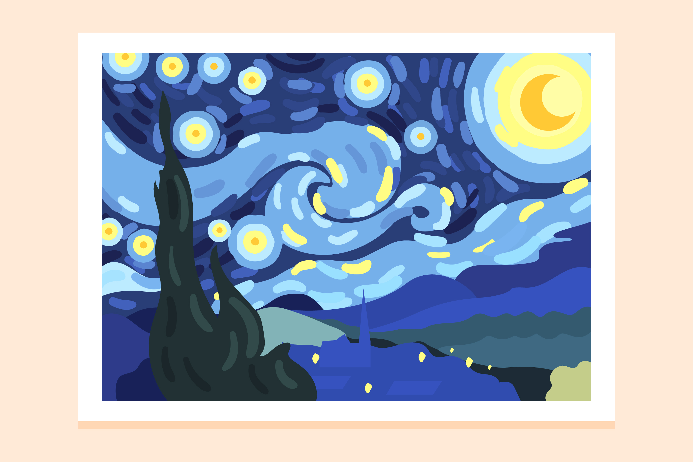

당신의 결과는?!
'ISFJ'
안전 제일 주의 "보안 전문가형"

What's on my desk...

바탕화면 명화
나는 바탕화면 보면서 힐링해

화분
닝겐은 자연에 해충이야
- 그래 솔직히 좀 게으른건 인정하는 편임. 하지만 완벽주의자라 발등에 불떨어질때까지 기다리다 완벽하게 호다닥 해버린다구요,,, (물론 시간이 없어서 완벽을 챙기지 못하면 너무 스트레스 받음. 이런 아이러니함 스스로도 잘 알고 있음)
- 인생노잼처럼 무난하게 사는것 같은데 본인은 만족하고 효율적으로 산다고 생각함. (사실 되게 쓸데없는 것까지 신경쓰면서도 생각보다 쿨함. 아무튼 좀 아이러니함.)
- 관심받는 건 좋은데 관심받기 위해서 노력하진 않고 싶진 않고... 또 적당히 관심 받아야함... 하.. 어렵다 나란 사람.
- 친구야, 인생은 말이야 물 흐르는 듯이 흘러가는 게 인생의 이치야~ 하지만 그 물은 계획은 따라서 흘러줬음 좋겠다. 무계획? 즉흥?? 내 인생에 그런 단어는 아주 보기 힘들걸? (근데 있긴 있음)
- 착하다, 배려심이 깊다 이런 말을 듣긴 하는데... 사실 그냥 별 생각없음. 속으론 내 사리사욕 생각중이니까. 내인생이 제일 중요하지 ! 하지만 부탁은 거절 못하는 약간의 호구미
- 인간관계... 너무.. 어렵고..스트레스... 비판.... 그게 뭔데.. 어떻게 하냐고..? 무례한거..싫다.. 하지만 거짓말, 허세 같은 모습을 보면 단호박. 응 너 저리가~
- 인터넷 세상에 내 자취를 남기고 싶지 않아하는 편. 정보의 바다에 나라는 배를 흘려보내고 싶지 않은 마음이랄까...? 시크릿 모드 애용함.
- 별 것까지 다 기억함. 친구끼리 과거 이야기하면 세세한것 하나하나까지 말해서 "소름 그걸 어케 기억하냐???" 라는 소리를 자주 들음. 인간 타임머신st.
내 안에 보안 전문가가 있다고?!
- 보안 전문가는 조직의 정보시스템과 네트워크를 보호하기 위해 보안 가이드를 계획하고 실행하는 일을 한다.
- 내외부의 위협으로부터 책임감 있게 정보자산을 보호해야하기 때문에 당신의 내면의 책임감이 보안과 궁합이 맞다.
- 사람들 앞에 서는 일을 본능적으로 피하고 있지 않은가? 보안전문가는 사전 준비시간이 충분하고 발표같은 끔찍한 일이 적다.
- 개인정보 보호 등을 통해 다른 사람을 도울 수 있고 정확성과 주의력으로 보안 취약점을 분석할 수 있다. 생각만해도 짜릿하고 적성에 맞지?
현실 보안 전문가가 되려면?
- 기초 언어:C언어
- 필수 지식:통신개념(ex. TCP), 데이터베이스(sql)
- 고급 스킬:운영체제 (ex. 리눅스, 유닉스, 윈도우)

♥우리는 운명: 아키택처 개발자

⊗우리는 에러: 데이터 분석가